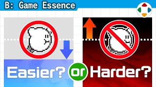
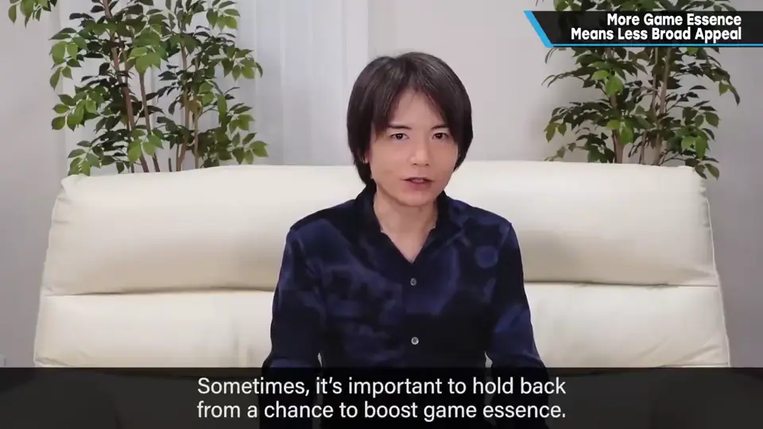
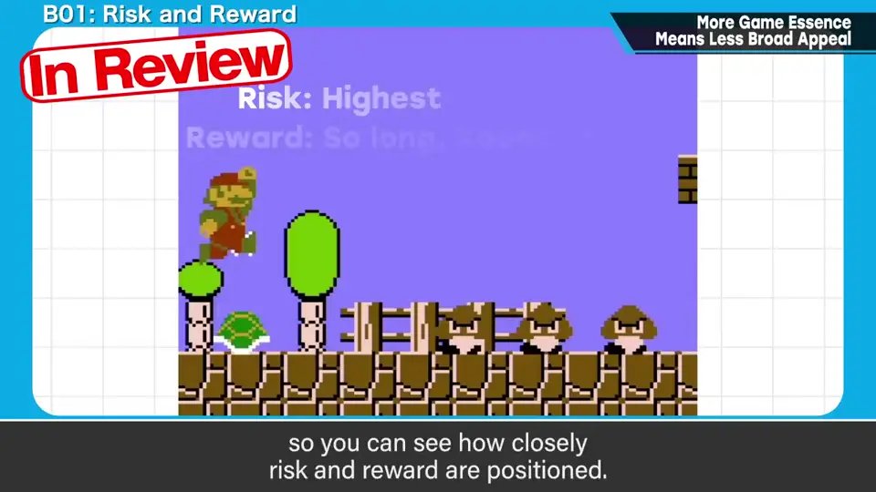
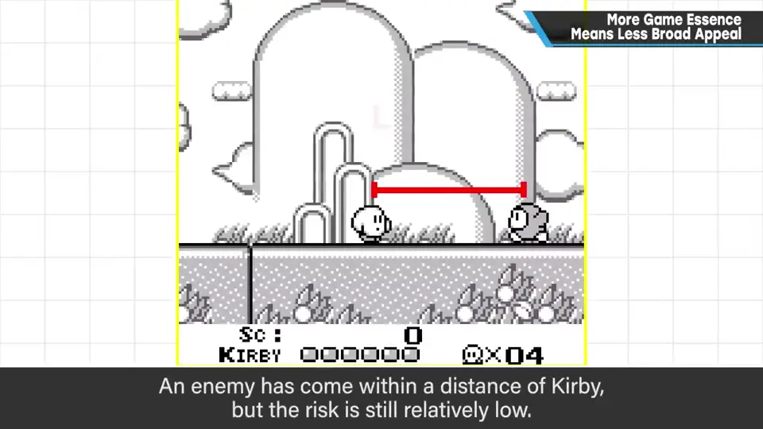
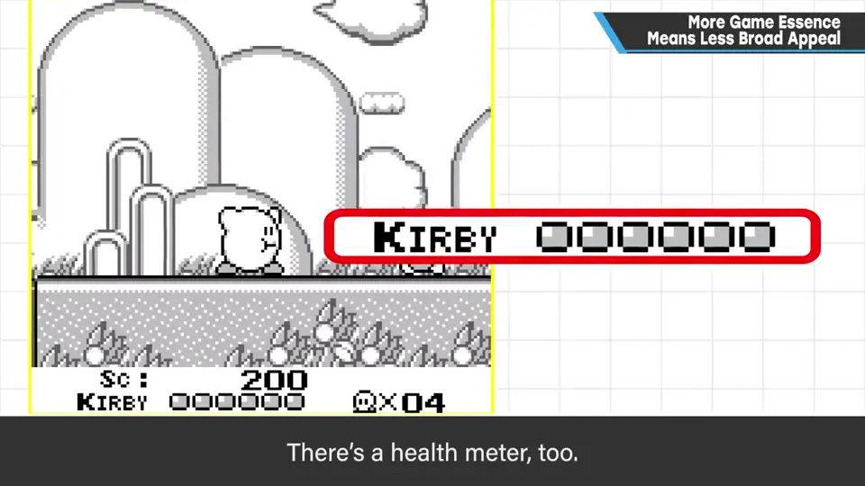
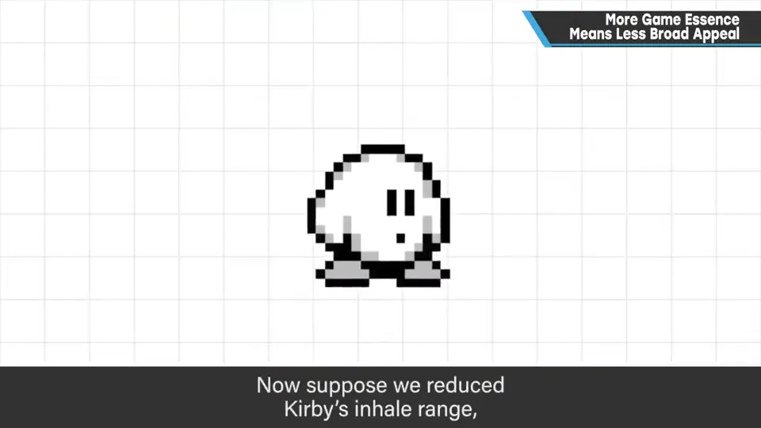
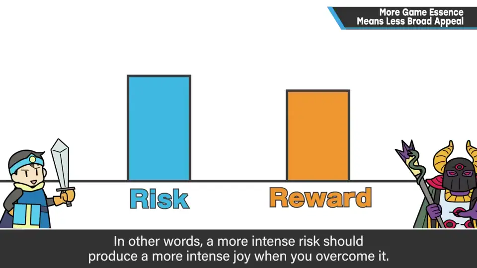
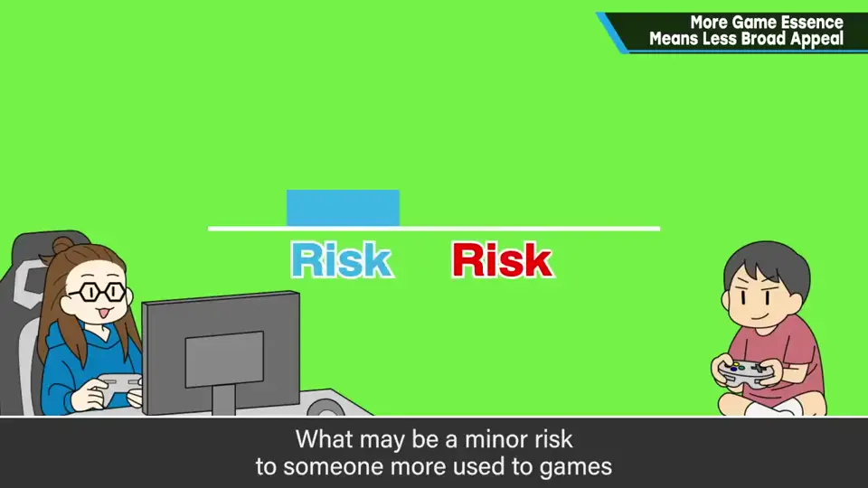

速览
风险与回报让游戏有趣刺激，但要意识到游戏性提得太高，大众性就会下降。可以为博弈设很多规则，但复杂的规则也难懂；明知能提高游戏性也会手下留情，这有时很重要，取决于游戏的目标。《超级马里奥兄弟》的关键是风险与回报离得很近：极度接近敌人、风险最大时才能反击——但以当时 FC 水准来看也有点太难。初代《星之卡比》：敌人靠近到一定距离时风险还不高，此时就能吸入使其无效；而且是体力制，能挨 6 下；还能吐出攻击，范围比吸入更广；随时能飞，规避掉坑一击死的重惩罚。如果把吸入范围缩到极小、改成一击死、不能飞、操作加大惯性，游戏性大概会上升，但大众性会下降。风险与回报在适当平衡下大致成正比：风险越难，躲过时越开心；反过来，为初学者减轻风险的卡比，也有让游戏本身变得不那么有趣的缺点。但卡比并非不成立：对难度的感受因人而异，对新手来说小风险也可能很大。初代卡比本就瞄准这点，比马里奥少了刺激也算完成了它的角色。也有人连卡比都觉得难、只玩超休闲或手机游戏——樱井完全不认为全人类都该玩游戏。要大致意识目标人群：瞄准哪里取决于企划与概念，没有正确答案；理解游戏性产生的原理再决定目标。
1. 游戏性与大众性的取舍 0:03
风险与回报让游戏有趣而刺激；但要意识到，游戏性提得太高，大众性就会下降。
- 重视博弈、设定各种规则是可能的，但复杂的规则也难懂。
- 明知能提高游戏性，有时也要手下留情——这取决于游戏的目标。

2. 马里奥 vs 初代卡比 0:36
《超级马里奥兄弟》非常有趣，但即使以当时 FC 水准来看，也有些地方可能太难。它的关键是：极度靠近敌人、风险最大时才能转为反击——风险与回报离得非常近。

初代《星之卡比》则不同：
- 敌人靠近到一定程度时，风险还不太高——这时就能吸入，在风险变高前让对方无效；
- 体力制，能承受 6 次；
- 能吐出攻击，范围比吸入更广；
- 随时能飞，更容易避免掉坑一击死这种重惩罚。


如果把吸入范围缩到极小、改成一击死、不能飞，或者操作加入更大的惯性——游戏性大概会上升，作为博弈也算合理，但大众性会下降。

3. 风险越低，回报也越低 2:05
风险与回报在适当平衡下，大致纯粹地成正比：风险越困难，避开时的喜悦越强；反过来，风险低回报也低——为初学者减轻风险的卡比，也有让游戏本身没那么有趣的缺点。


当然，卡比并非不成立。对难度的感受因人而异：对熟悉游戏的人是小风险，对不熟悉的人可能是巨大的风险。初代卡比本就瞄准了「对初学者友善」，所以说白了比马里奥少了刺激、甚至无聊，作为角色也是认可的。
4. 意识目标人群 3:11
也有人连初代卡比都觉得难，只能玩超休闲游戏或规则极简的手机游戏。樱井完全不认为全人类都该玩游戏，所以这样也没关系。
自测题
1. 初代《星之卡比》用哪些设计降低风险？
吸入能在风险变高前让敌人无效；体力制可挨 6 次；吐出攻击范围更广；随时能飞，避免掉坑一击死。 1:06
2. 为什么说照顾初学者的卡比也有缺点？
风险与回报大致成正比：风险降低，回报（克服时的喜悦）也降低，游戏本身就没那么刺激有趣。 2:05
3. 樱井对「目标人群」的结论是什么？
要大致意识目标；瞄准哪里取决于企划和概念，没有正解，应在理解游戏性原理的基础上决定。 3:28